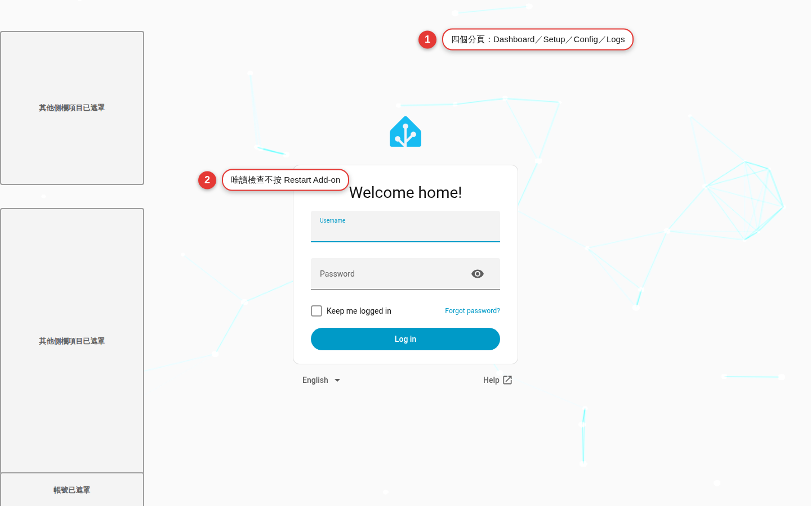

第一次開啟 Web GUI
從 Home Assistant Ingress 進入管理介面，先看懂 Dashboard、Setup、Config 與 Logs 各自負責什麼。這次只瀏覽與辨識狀態，不按 Restart、Save、Save & Restart、授權或任何會改變系統的控制項。
先認路，再碰會改設定的按鈕
Cloudflared Web GUI 把原本分散在 App options 與日誌裡的資訊整理成四頁。好處是更容易看懂，風險則是「儲存」與「重新啟動」也變得很近：如果還沒弄清楚頁面責任就一路按下去，可能寫入 Supervisor options、重啟 App，接著建立或改動 Tunnel 與 DNS。
Ingress 是管理入口，不是遠端公開網址
從 App 詳細頁選 Open Web UI 時，Home Assistant 透過 Ingress 把 Web GUI 顯示在已登入的介面裡。專案的內部 Web GUI 服務使用 8099，但 App 設定不要求把這個 port 對外映射；你的 Home Assistant 登入就是進入這個管理頁的第一道門。
| 你看到的網址／入口 | 用途 | 是否應另外公開 |
|---|---|---|
| App 詳細頁的 Open Web UI | 經 Ingress 開啟管理介面 | 不用；保持在 Home Assistant 登入後使用 |
| 側邊欄 Cloudflared | 同一個 Ingress 管理介面的捷徑 | 不用 |
ha.example.com | 日後規劃給 Home Assistant 的遠端 hostname | 只有完成安全設定後才建立 |
| Cloudflare 授權網址 | 本地管理模式首次授權的短期操作入口 | 不可公開、轉貼或放進教學截圖 |
七步完成第一次唯讀導覽
從 App 詳細頁進入
到「設定」中的 Apps，開啟 Cloudflared Web GUI 詳細頁。確認 App 狀態是已啟動，再選 Open Web UI。若你在第 2 章開了側邊欄顯示，也可選 Cloudflared 捷徑。
確認你仍在 Home Assistant 裡
頁面應在 Home Assistant 登入保護下開啟，而不是要求你直接連內部 port。先核對左側仍有 Home Assistant 導覽與目前主機身分，避免把另一台主機的介面認成這台。
先看 Dashboard，不按 Restart
辨識 Tunnel、Mode、Add-on 三類狀態卡，以及 Restart Add-on。空白 options 時，畫面可能提示尚未設定且 Tunnel stopped；這是首次導覽的預期狀態，不是催你立刻重啟。
切到 Setup，只讀步驟狀態
Setup 會追蹤設定、Cloudflare 授權、Tunnel 建立與連線。空白設定通常停在第一步並引導前往 Config。若畫面意外出現授權網址，不要點、複製或分享，先確認這台主機是否已有設定。
切到 Config，不碰表單
確認頁面載入 Supervisor options，並找出 Save、Save & Restart、Reset 的位置。不要在欄位輸入文字、切換按鈕或移除 token；這一章連暫存表單都不改，直接看完離開。
切到 Logs，只看即時狀態
Logs 的內容與 Home Assistant App Log 分頁相同，會顯示 Connected／Disconnected、篩選欄與日誌區。不要下載或公開完整日誌；若只想辨識頁面，看到串流已連線或 Waiting for logs 即可。
回到 Dashboard 並離開
再次確認沒有重啟中的提示、沒有新增 hostname，也沒有進入 Cloudflare 授權頁。關閉 Web GUI 分頁或回 Home Assistant 首頁；不需要登出 Home Assistant，也不需要停止 App。

四個頁面各自回答什麼問題
| 頁面 | 主要回答 | 可見內容 | 這章的停止線 |
|---|---|---|---|
| Dashboard | App 與 Tunnel 現在怎麼了？ | Tunnel 狀態、edge connections、模式、App／Supervisor 連線、版本 | 不按 Restart Add-on |
| Setup | 首次設定走到哪一步？ | 設定、授權、Tunnel 建立、連線進度；需要時顯示授權網址 | 不開授權網址、不複製連結 |
| Config | Supervisor options 目前是什麼？ | token、hostname、additional hosts、catch-all 與進階 options | 不改欄位、不按 Save 或 Save & Restart |
| Logs | App 與 cloudflared 回報了什麼？ | 與 HA Log 分頁相同的即時串流、篩選、清除畫面、下載 | 不公開或任意下載完整內容 |
辨識所有會動到系統或洩漏資料的位置
| 控制項／資料 | 實際影響 | 安全做法 |
|---|---|---|
| Dashboard：Restart Add-on | 重新執行 Tunnel setup，Tunnel 與 GUI 會短暫斷線；使用既有已儲存設定 | 本章不按；正式重啟前先確認維護時段 |
| Config：Save | 把表單寫入 Supervisor options，但仍需重啟才套用 | 不是草稿功能；確認所有欄位後才可用 |
| Config：Save & Restart | 寫入 Supervisor options，接著重新啟動 App | 視為正式變更；先備份與核對影響 |
| Setup：授權網址 | 讓瀏覽器進入 Cloudflare zone 授權流程 | 只在可信裝置自行開啟，不分享、不截圖 |
Config：tunnel_token | 遠端管理 Tunnel 的敏感憑證 | 即使畫面遮罩也不可複製到聊天或問題回報 |
| Logs：顯示／下載 | 可能含 hostname、Tunnel ID、IP、授權網址、錯誤上下文 | 先最小化摘錄並遮罩，再向可信對象求助 |
第一次開啟的驗收測試
Ingress 可正常開啟
從 App 詳細頁或側邊欄能進 Web GUI，過程由 Home Assistant 登入保護，沒有對內部 8099 建立直接公開連線。
四個頁面都能辨識
你能指出 Dashboard 看狀態、Setup 看首次進度、Config 看 Supervisor options、Logs 看即時日誌，而且切換時沒有離開 App 的 Ingress。
空白狀態合理
若第 2 章保持 options 空白，Dashboard／Setup 顯示未設定或 Tunnel stopped 可接受；Web GUI 可開才是這次重點，不把「尚未連線」誤判成安裝失敗。
Config 沒有被寫入
external_hostname仍空白、additional_hosts仍沒有項目，也沒有設定或移除tunnel_token；你未按 Save、Save & Restart 或 Reset。App 沒有被重啟
你未按 Dashboard 的 Restart Add-on，畫面沒有因本章操作而短暫失聯或重新執行 setup。
敏感內容沒有離開可信環境
你未下載、轉貼或截取完整 Logs，未分享授權網址、token、hostname、Tunnel ID、帳號或 IP。
第一次開啟常見卡關
Open Web UI 是灰色或不存在
回 App 詳細頁確認安裝完成且 App 已啟動，再重新整理 Home Assistant。若狀態反覆停止，查看 App Log 最新錯誤；不要改用公開 8099 當替代方案。
開啟後是空白頁或一直載入
先等待短時間，再用 App 詳細頁重新開啟；確認 Home Assistant 工作階段仍有效。可嘗試重新整理瀏覽器，但不要在排錯過程按 Restart Add-on 或 Save & Restart。
Dashboard 顯示 Tunnel stopped
若 options 完全空白，這是專案刻意保留 Web GUI 的首次設定狀態。到 Setup 確認顯示未設定即可，不要用假 hostname 填滿欄位。
Dashboard 顯示 Supervisor unreachable
先重新整理並確認 App 本身仍在執行。若持續顯示，讀 Home Assistant App Log 與系統狀態，記下 App 版本和已遮罩錯誤；不要為排除此訊息去修改 Tunnel options。
Logs 顯示 Disconnected 或 Waiting for logs
短暫斷線不一定代表 Tunnel 故障；確認 App 沒有正在啟動或停止，稍候看串流是否恢復。需要時可用頁面的 Connect 重新連接日誌串流，這不等於重啟 App。
畫面已出現陌生 hostname、token configured 或授權網址
立即停止，不要點連結、複製、清除 token 或儲存。這表示系統可能不是你預期的空白狀態；先和管理者確認既有用途，並把敏感畫面留在可信環境。
切到 Config 時誤改了欄位
只要尚未按 Save 或 Save & Restart，先離開頁面再重新進入，讓已儲存 options 重新載入。不要按 Save「改回去」；那仍是一次 Supervisor options 寫入。
第一次開啟常見問題
Dashboard 顯示 stopped，代表 App 壞掉嗎？
Open Web UI 和側邊欄 Cloudflared 是不同介面嗎？
只按 Save、不按 Restart 就不算變更嗎？
Dashboard 的 Restart Add-on 和 Save & Restart 有什麼差別？
Logs 的 Filter 會刪除不符合的日誌嗎？
可以把授權網址傳到手機再開嗎？
官方來源與版本提示
| 來源 | 這章查證的內容 |
|---|---|
| WOOWTECH README：What you get | Dashboard、Setup、Config、Logs 的用途與 Supervisor options 同步 |
| Cloudflared Web GUI App 文件 | Open Web UI／側邊欄 Ingress、空白設定行為、Save & Restart 與四頁功能 |
| Web GUI 原始碼 | 現行導覽名稱、Dashboard 重啟提示、Config 儲存行為與 Logs 控制項 |
| Home Assistant Developer：App Ingress | Apps 經 Home Assistant 前端提供 Web 介面的官方機制 |
| Cloudflare Tunnel 官方文件 | connector 與 Tunnel 的運作邊界，避免把 Ingress 管理頁誤當 public hostname |